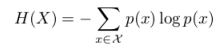
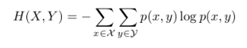
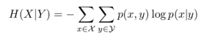
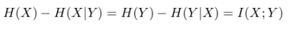

The information content generated per symbol or per second by an information source.
The information rate is given by equation as, R = rH
Module
Shannon's entropy formula is: H(x) = -Σni=1 [P(xi) * logbP(xi)] = Σni=1 [P(xi) * logb(1 / P(xi))] Where. Σni=1 is a summation operator for probabilities from i to n. P(xi) is the probability of a single event.
Module
Joint entropy is a measure of the uncertainty associated with a set of variables.
Module
Conditional entropy quantifies the amount of information needed to describe the outcome of a random variable Y given that the value of another random variable X is known.
Module
Mutual information is one of many quantities that measures how much one random variables tells us about another.
Module
Procedure for shannon fano algorithm:
For a given list of symbols, develop a corresponding list of probabilities or frequency counts so that each symbol‘s relative frequency of occurrence is known.
Sort the lists of symbols according to frequency, with the most frequently occurring symbols at the left and the least common at the right.
Divide the list into two parts, with the total frequency counts of the left part being as close to the total of the right as possible.
The left part of the list is assigned the binary digit 0, and the right part is assigned the digit 1. This means that the codes for the symbols in the first part will all start with 0, and the codes in the second part will all start with 1.
Recursively apply the steps 3 and 4 to each of the two halves, subdividing groups and adding bits to the codes until each symbol has become a corresponding code leaf on the tree.
Module
Huffman coding is a lossless data compression algorithm. The idea is to assign variable-length codes to input characters, lengths of the assigned codes are based on the frequencies of corresponding characters. The most frequent character gets the smallest code and the least frequent character gets the largest code.
Module
LZW is the one known compression algorithm appropriate for communication. LZW data compression algorithm is popular for data compression because it is an adaptive algorithm and achieves an excellent compromise between compression performance and speed of execution. LZW is a dictionary based data compression algorithm, which compress the data in a lossless manner so that no information is lost. LZW algorithm requires no extra communication from the encoder to the decoder.
Module
Hamming code is a block code that is capable of detecting up to two simultaneous bit errors and correcting single-bit errors. It was developed by R.W. Hamming for error correction. In this coding method, the source encodes the message by inserting redundant bits within the message. These redundant bits are extra bits that are generated and inserted at specific positions in the message itself to enable error detection and correction. When the destination receives this message, it performs recalculations to detect errors and find the bit position that has error.
Module
In block coding, the complete message bits are divided into blocks where each block holds the same number of bits. Suppose each block contains k bits, and each k bits of a block defines a dataword. Hence, the overall datawords will be 2k. At this particular point, we have not considered any redundancies, thus, we only have the actual message bitstream converted into datawords.
Now, in order to perform encoding, the datawords are encoded as codewords having n number of bits. We have recently discussed that a block has k bits and after encoding there will be n bits in each block (of course, n>k) and these n bits will be transmitted across the channel. While the additional n-k bits are not the message bits as these are named as parity bits but during transmission, the parity bits act as they are a part of message bits.
Module
For a linear block code, the syndrome S is equal to the sum of those rows of HT where errors have occurred. The syndrome of a received vector is zero if R is a valid codeword. If errors occur, then the syndrome S is non-zero.
Module